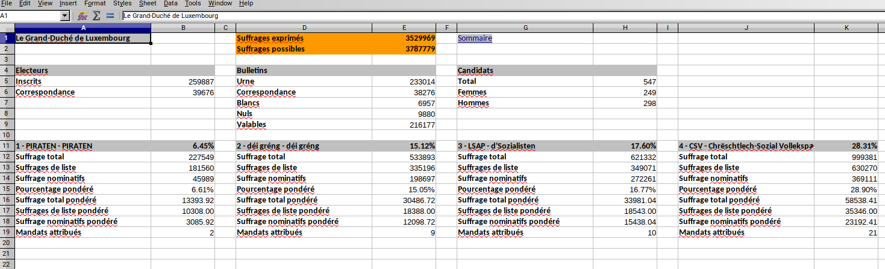
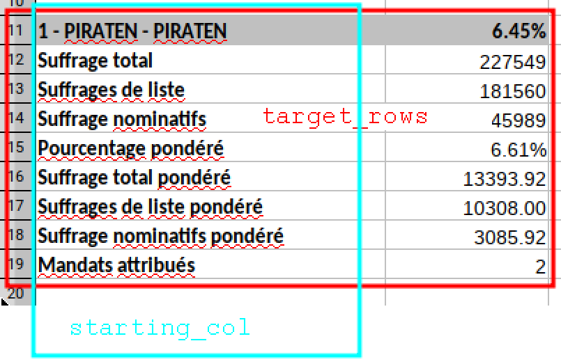

Getting the data from the Luxembourguish elections out of Excel
In this blog post, similar to a previous blog post I am going to show you how we can go from an Excel workbook that contains data to flat file. I will taking advantage of the structure of the tables inside the Excel sheets by writing a function that extracts the tables and then mapping it to each sheet!
Last week, October 14th, Luxembourguish nationals went to the polls to elect the Grand Duke! No, actually, the Grand Duke does not get elected. But Luxembourguish citizen did go to the polls to elect the new members of the Chamber of Deputies (a sort of parliament if you will). The way the elections work in Luxembourg is quite interesting; you can vote for a party, or vote for individual candidates from different parties. The candidates that get the most votes will then seat in the parliament. If you vote for a whole party, each of the candidates get a vote. You get as many votes as there are candidates to vote for. So, for example, if you live in the capital city, also called Luxembourg, you get 21 votes to distribute. You could decide to give 10 votes to 10 candidates of party A and 11 to 11 candidates of party B. Why 21 votes? The chamber of Deputies is made up 60 deputies, and the country is divided into four legislative circonscriptions. So each voter in a circonscription gets an amount of votes that is proportional to the population size of that circonscription.
Now you certainly wonder why I put the flag of Gambia on top of this post? This is because the government that was formed after the 2013 elections was made up of a coalition of 3 parties; the Luxembourg Socialist Worker’s Party, the Democratic Party and The Greens. The LSAP managed to get 13 seats in the Chamber, while the DP got 13 and The Greens 6, meaning 32 seats out of 60. So because they made this coalition, they could form the government, and this coalition was named the Gambia coalition because of the colors of these 3 parties: red, blue and green. If you want to take a look at the ballot from 2013 for the southern circonscription, click here.
{kind=link}
Now that you have the context, we can go back to some data science. The results of the elections of last week can be found on Luxembourg’s Open Data portal, right here. The data is trapped inside Excel sheets; just like I explained in a previous blog post the data is easily read by human, but not easily digested by any type of data analysis software. So I am going to show you how we are going from this big Excel workbook to a flat file.
First of all, if you open the Excel workbook, you will notice that there are a lot of sheets; there is one for the whole country, named “Le Grand-Duché de Luxembourg”, one for the four circonscriptions, “Centre”, “Nord”, “Sud”, “Est” and 102 more for each commune of the country (a commune is an administrative division). However, the tables are all very similarly shaped, and roughly at the same position.

This is good, because we can write a function to extracts the data and then map it over all the sheets. First, let’s load some packages and the data for the country:
library("tidyverse")
library("tidyxl")
library("brotools")# National Level 2018
elections_raw_2018 <- xlsx_cells("leg-2018-10-14-22-58-09-737.xlsx",
sheets = "Le Grand-Duché de Luxembourg")
{brotools} is my own package. You can install it with:
devtools::install_github("b-rodrigues/brotools")
it contains a function that I will use down below. The function I wrote to extract the tables is not very complex, but requires that you are familiar with how {tidyxl} imports Excel workbooks. So if you are not familiar with it, study the imported data frame for a few minutes. It will make understanding the next function easier:
extract_party <- function(dataset, starting_col, target_rows){
almost_clean <- dataset %>%
filter(row %in% target_rows) %>%
filter(col %in% c(starting_col, starting_col + 1)) %>%
select(character, numeric) %>%
fill(numeric, .direction = "up") %>%
filter(!is.na(character))
party_name <- almost_clean$character[1] %>%
str_split("-", simplify = TRUE) %>%
.[2] %>%
str_trim()
almost_clean$character[1] <- "Pourcentage"
almost_clean$party <- party_name
colnames(almost_clean) <- c("Variables", "Values", "Party")
almost_clean %>%
mutate(Year = 2018) %>%
select(Party, Year, Variables, Values)
}
This function has three arguments, dataset, starting_col and target_rows. dataset is the data I loaded with xlsx_cells from the {tidyxl} package. I think the following picture illustrates easily what the function does:

So the function first filters only the rows we are interested in, then the cols. I then select the columns I want which are called character and numeric (if the Excel cell contains characters then you will find them in the character column, if it contains numbers you will them in the numeric column), then I fill the empty cells with the values from the numeric column and the I remove the NA’s. These two last steps might not be so clear; this is how the data looks like up until the select() function:
> elections_raw_2018 %>%
+ filter(row %in% seq(11,19)) %>%
+ filter(col %in% c(1, 2)) %>%
+ select(character, numeric)
# A tibble: 18 x 2
character numeric
<chr> <dbl>
1 1 - PIRATEN - PIRATEN NA
2 NA 0.0645
3 Suffrage total NA
4 NA 227549
5 Suffrages de liste NA
6 NA 181560
7 Suffrage nominatifs NA
8 NA 45989
9 Pourcentage pondéré NA
10 NA 0.0661
11 Suffrage total pondéré NA
12 NA 13394.
13 Suffrages de liste pondéré NA
14 NA 10308
15 Suffrage nominatifs pondéré NA
16 NA 3086.
17 Mandats attribués NA
18 NA 2 So by filling the NA’s in the numeric the data now looks like this:
> elections_raw_2018 %>%
+ filter(row %in% seq(11,19)) %>%
+ filter(col %in% c(1, 2)) %>%
+ select(character, numeric) %>%
+ fill(numeric, .direction = "up")
# A tibble: 18 x 2
character numeric
<chr> <dbl>
1 1 - PIRATEN - PIRATEN 0.0645
2 NA 0.0645
3 Suffrage total 227549
4 NA 227549
5 Suffrages de liste 181560
6 NA 181560
7 Suffrage nominatifs 45989
8 NA 45989
9 Pourcentage pondéré 0.0661
10 NA 0.0661
11 Suffrage total pondéré 13394.
12 NA 13394.
13 Suffrages de liste pondéré 10308
14 NA 10308
15 Suffrage nominatifs pondéré 3086.
16 NA 3086.
17 Mandats attribués 2
18 NA 2 And then I filter out the NA’s from the character column, and that’s almost it! I simply need to add a new column with the party’s name and rename the other columns. I also add a “Year” colmun.
Now, each party will have a different starting column. The table with the data for the first party starts on column 1, for the second party it starts on column 4, column 7 for the third party… So the following vector contains all the starting columns:
position_parties_national <- seq(1, 24, by = 3)(If you study the Excel workbook closely, you will notice that I do not extract the last two parties. This is because these parties were not present in all of the 4 circonscriptions and are very, very, very small.)
The target rows are always the same, from 11 to 19. Now, I simply need to map this function to this list of positions and I get the data for all the parties:
elections_national_2018 <- map_df(position_parties_national, extract_party,
dataset = elections_raw_2018, target_rows = seq(11, 19)) %>%
mutate(locality = "Grand-Duchy of Luxembourg", division = "National")
I also added the locality and division columns to the data.
Let’s take a look:
glimpse(elections_national_2018)## Observations: 72
## Variables: 6
## $ Party <chr> "PIRATEN", "PIRATEN", "PIRATEN", "PIRATEN", "PIRATEN",…
## $ Year <dbl> 2018, 2018, 2018, 2018, 2018, 2018, 2018, 2018, 2018, …
## $ Variables <chr> "Pourcentage", "Suffrage total", "Suffrages de liste",…
## $ Values <dbl> 6.446204e-02, 2.275490e+05, 1.815600e+05, 4.598900e+04…
## $ locality <chr> "Grand-Duchy of Luxembourg", "Grand-Duchy of Luxembour…
## $ division <chr> "National", "National", "National", "National", "Natio…Very nice.
Now we need to do the same for the 4 electoral circonscriptions. First, let’s load the data:
# Electoral districts 2018
districts <- c("Centre", "Nord", "Sud", "Est")
elections_district_raw_2018 <- xlsx_cells("leg-2018-10-14-22-58-09-737.xlsx",
sheets = districts)Now things get trickier. Remember I said that the number of seats is proportional to the population of each circonscription? We simply can’t use the same target rows as before. For example, for the “Centre” circonscription, the target rows go from 12 to 37, but for the “Est” circonscription only from 12 to 23. Ideally, we would need a function that would return the target rows.
This is that function:
# The target rows I need to extract are different from district to district
get_target_rows <- function(dataset, sheet_to_extract, reference_address){
last_row <- dataset %>%
filter(sheet == sheet_to_extract) %>%
filter(address == reference_address) %>%
pull(numeric)
seq(12, (11 + 5 + last_row))
}
This function needs a dataset, a sheet_to_extract and a reference_address. The reference address is a cell that actually contains the number of seats in that circonscription, in our case “B5”. We can easily get the list of target rows now:
# Get the target rows
list_targets <- map(districts, get_target_rows, dataset = elections_district_raw_2018,
reference_address = "B5")
list_targets## [[1]]
## [1] 12 13 14 15 16 17 18 19 20 21 22 23 24 25 26 27 28 29 30 31 32 33 34
## [24] 35 36 37
##
## [[2]]
## [1] 12 13 14 15 16 17 18 19 20 21 22 23 24 25
##
## [[3]]
## [1] 12 13 14 15 16 17 18 19 20 21 22 23 24 25 26 27 28 29 30 31 32 33 34
## [24] 35 36 37 38 39
##
## [[4]]
## [1] 12 13 14 15 16 17 18 19 20 21 22 23Now, let’s split the data we imported into a list, where each element of the list is a dataframe with the data from one circonscription:
list_data_districts <- map(districts, ~filter(.data = elections_district_raw_2018, sheet == .))
Now I can easily map the function I defined above, extract_party to this list of datasets. Well, I say easily, but it’s a bit more complicated than before because I have now a list of datasets and a list of target rows:
elections_district_2018 <- map2(.x = list_data_districts, .y = list_targets,
~map_df(position_parties_national, extract_party, dataset = .x, target_rows = .y))
The way to understand this is that for each element of list_data_districts and list_targets, I have to map extract_party to each element of position_parties_national. This gives the intented result:
elections_district_2018## [[1]]
## # A tibble: 208 x 4
## Party Year Variables Values
## <chr> <dbl> <chr> <dbl>
## 1 PIRATEN 2018 Pourcentage 0.0514
## 2 PIRATEN 2018 CLEMENT Sven (1) 8007
## 3 PIRATEN 2018 WEYER Jerry (2) 3446
## 4 PIRATEN 2018 CLEMENT Pascal (3) 3418
## 5 PIRATEN 2018 KUNAKOVA Lucie (4) 2860
## 6 PIRATEN 2018 WAMPACH Jo (14) 2693
## 7 PIRATEN 2018 LAUX Cynthia (6) 2622
## 8 PIRATEN 2018 ISEKIN Christian (5) 2610
## 9 PIRATEN 2018 SCHWEICH Georges (9) 2602
## 10 PIRATEN 2018 LIESCH Mireille (8) 2551
## # … with 198 more rows
##
## [[2]]
## # A tibble: 112 x 4
## Party Year Variables Values
## <chr> <dbl> <chr> <dbl>
## 1 PIRATEN 2018 Pourcentage 0.0767
## 2 PIRATEN 2018 COLOMBERA Jean (2) 5074
## 3 PIRATEN 2018 ALLARD Ben (1) 4225
## 4 PIRATEN 2018 MAAR Andy (3) 2764
## 5 PIRATEN 2018 GINTER Joshua (8) 2536
## 6 PIRATEN 2018 DASBACH Angelika (4) 2473
## 7 PIRATEN 2018 GRÜNEISEN Sam (6) 2408
## 8 PIRATEN 2018 BAUMANN Roy (5) 2387
## 9 PIRATEN 2018 CONRAD Pierre (7) 2280
## 10 PIRATEN 2018 TRAUT ép. MOLITOR Angela Maria (9) 2274
## # … with 102 more rows
##
## [[3]]
## # A tibble: 224 x 4
## Party Year Variables Values
## <chr> <dbl> <chr> <dbl>
## 1 PIRATEN 2018 Pourcentage 0.0699
## 2 PIRATEN 2018 GOERGEN Marc (1) 9818
## 3 PIRATEN 2018 FLOR Starsky (2) 6737
## 4 PIRATEN 2018 KOHL Martine (3) 6071
## 5 PIRATEN 2018 LIESCH Camille (4) 6025
## 6 PIRATEN 2018 KOHL Sylvie (6) 5628
## 7 PIRATEN 2018 WELTER Christian (5) 5619
## 8 PIRATEN 2018 DA GRAÇA DIAS Yanick (10) 5307
## 9 PIRATEN 2018 WEBER Jules (7) 5301
## 10 PIRATEN 2018 CHMELIK Libor (8) 5247
## # … with 214 more rows
##
## [[4]]
## # A tibble: 96 x 4
## Party Year Variables Values
## <chr> <dbl> <chr> <dbl>
## 1 PIRATEN 2018 Pourcentage 0.0698
## 2 PIRATEN 2018 FRÈRES Daniel (1) 4152
## 3 PIRATEN 2018 CLEMENT Jill (7) 1943
## 4 PIRATEN 2018 HOUDREMONT Claire (2) 1844
## 5 PIRATEN 2018 BÖRGER Nancy (3) 1739
## 6 PIRATEN 2018 MARTINS DOS SANTOS Catarina (6) 1710
## 7 PIRATEN 2018 BELLEVILLE Tatjana (4) 1687
## 8 PIRATEN 2018 CONTRERAS Gerald (5) 1687
## 9 PIRATEN 2018 Suffrages total 14762
## 10 PIRATEN 2018 Suffrages de liste 10248
## # … with 86 more rows
I now need to add the locality and division columns:
elections_district_2018 <- map2(.y = elections_district_2018, .x = districts,
~mutate(.y, locality = .x, division = "Electoral district")) %>%
bind_rows()We’re almost done! Now we need to do the same for the 102 remaining sheets, one for each commune of Luxembourg. This will now go very fast, because we got all the building blocks from before:
communes <- xlsx_sheet_names("leg-2018-10-14-22-58-09-737.xlsx")
communes <- communes %-l%
c("Le Grand-Duché de Luxembourg", "Centre", "Est", "Nord", "Sud", "Sommaire")
Let me introduce the following function: %-l%. This function removes elements from lists:
c("a", "b", "c", "d") %-l% c("a", "d")## [1] "b" "c"You can think of it as “minus for lists”. This is called an infix operator.
So this function is very useful to get the list of communes, and is part of my package, {brotools}.
As before, I load the data:
elections_communes_raw_2018 <- xlsx_cells("leg-2018-10-14-22-58-09-737.xlsx",
sheets = communes)Then get my list of targets, but I need to change the reference address. It’s “B8” now, not “B7”.
# Get the target rows
list_targets <- map(communes, get_target_rows,
dataset = elections_communes_raw_2018, reference_address = "B8")I now create a list of communes by mapping a filter function to the data:
list_data_communes <- map(communes, ~filter(.data = elections_communes_raw_2018, sheet == .))
And just as before, I get the data I need by using extract_party, and adding the “locality” and “division” columns:
elections_communes_2018 <- map2(.x = list_data_communes, .y = list_targets,
~map_df(position_parties_national, extract_party, dataset = .x, target_rows = .y))
elections_communes_2018 <- map2(.y = elections_communes_2018, .x = communes,
~mutate(.y, locality = .x, division = "Commune")) %>%
bind_rows()The steps are so similar for the four circonscriptions and for the 102 communes that I could have write a big wrapper function and the use it for the circonscription and communes at once. But I was lazy.
Finally, I bind everything together and have a nice, tidy, flat file:
# Final results
elections_2018 <- bind_rows(list(elections_national_2018, elections_district_2018, elections_communes_2018))
glimpse(elections_2018)## Observations: 15,544
## Variables: 6
## $ Party <chr> "PIRATEN", "PIRATEN", "PIRATEN", "PIRATEN", "PIRATEN",…
## $ Year <dbl> 2018, 2018, 2018, 2018, 2018, 2018, 2018, 2018, 2018, …
## $ Variables <chr> "Pourcentage", "Suffrage total", "Suffrages de liste",…
## $ Values <dbl> 6.446204e-02, 2.275490e+05, 1.815600e+05, 4.598900e+04…
## $ locality <chr> "Grand-Duchy of Luxembourg", "Grand-Duchy of Luxembour…
## $ division <chr> "National", "National", "National", "National", "Natio…This blog post is already quite long, so I will analyze the data now that R can easily ingest it in a future blog post.